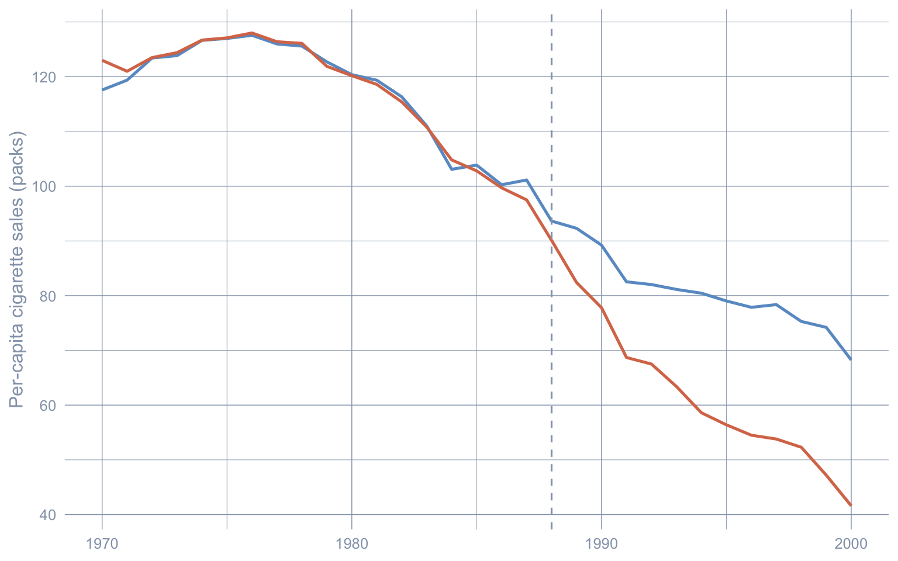
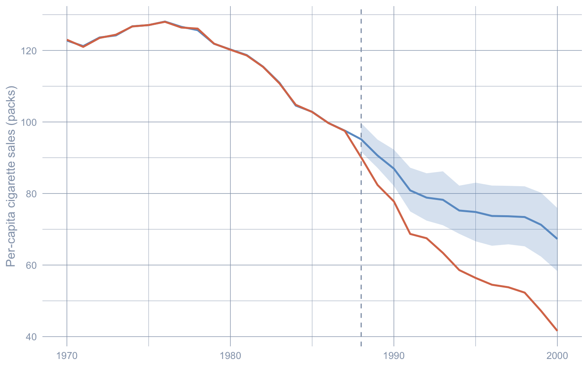
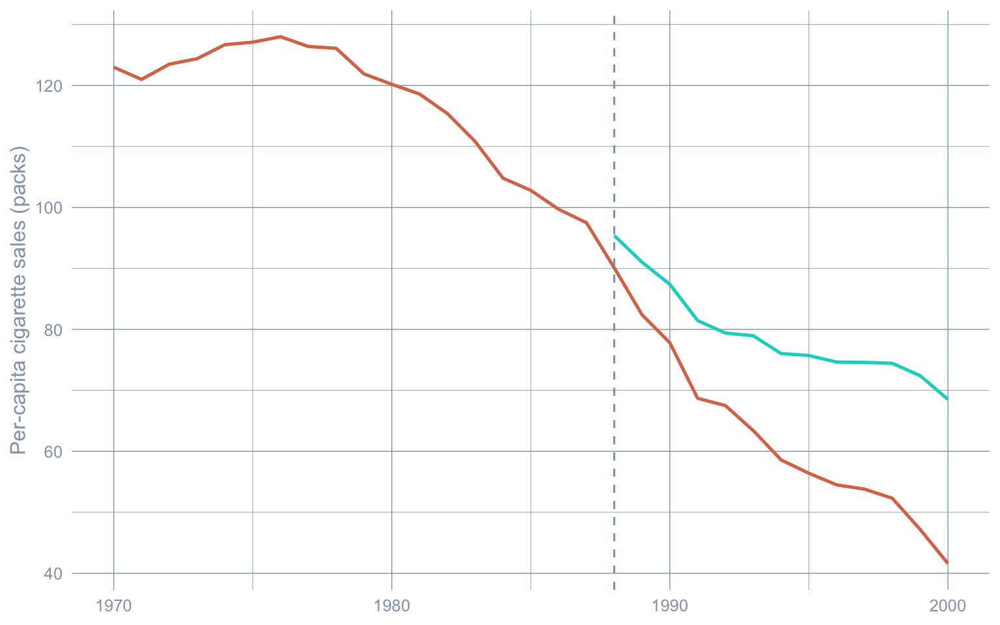
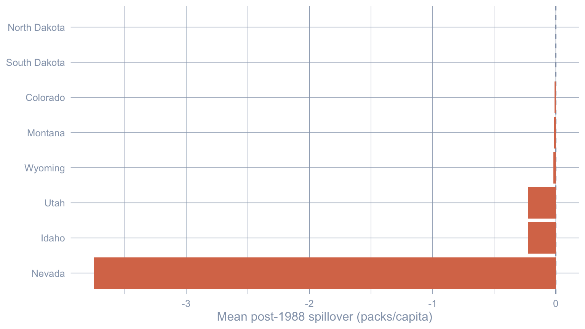
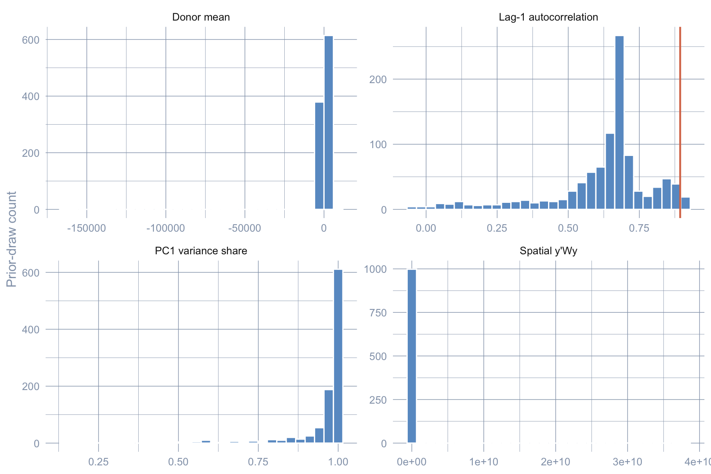

flowchart LR
A["Stage 1<br/>Classical SCM<br/>simplex weights<br/>SUTVA imposed"] --> B["Stage 2<br/>Bayesian SCM<br/>horseshoe prior<br/>SUTVA imposed"]
B --> C["Stage 3<br/>Bayesian Spatial SCM<br/>horseshoe + SAR ρ<br/>SUTVA relaxed"]
C --> D["Prior predictive<br/>+ cross-stage<br/>comparison"]
style A fill:#6a9bcc,stroke:#cbd5e0,color:#fff
style B fill:#d97757,stroke:#cbd5e0,color:#fff
style C fill:#00d4c8,stroke:#cbd5e0,color:#141413
style D fill:#7A209F,stroke:#cbd5e0,color:#fff
7 Bayesian Spatial Synthetic Control
7.1 Why a third synthetic-control chapter?
Chapter 5 fit a classical Synthetic Control: donor weights live on the simplex and are chosen by a quadratic optimiser. Chapter 6 borrowed donor information in a different way — through a Bayesian structural time-series model. Both treat the donor states’ outcomes as unaffected by California’s policy. That assumption — the stable unit treatment value assumption (SUTVA) — is the price of any synthetic-control estimate.
For tobacco, SUTVA is empirically suspect. When California raised retail prices in 1989, cross-border-shopping into Nevada changed cigarette sales on both sides of the line. If donor sales themselves shift because of the treatment, then the “counterfactual” we build from them is contaminated.
This chapter ports the replication of Sakaguchi & Tagawa (2026), which relaxes both ingredients in two stages:
- Stage 2 swaps the simplex for a horseshoe prior on the donor weights. Sparsity becomes a feature of the posterior, not a hard constraint.
- Stage 3 adds a spatial autoregressive (SAR) layer to the donor data-generating process. SUTVA is no longer assumed — spillover effects on neighbours become a derived quantity, with Nevada absorbing essentially all the mass.
We rerun Stage 1 in this chapter too, so the three estimates sit in one table. The donor pool here is the 38 US states; the treated unit is California; the outcome is per-capita cigarette sales over 1970–2000.
7.2 The three-stage pipeline
7.3 Setup and data
Code
library(tidyverse)
library(tidysynth)
library(Rcpp)
library(RcppArmadillo)
library(Matrix)
library(coda)
library(patchwork)
library(glue)
source("R/table_helpers.R")
SEED <- 20251022L
MCMC_ITER <- 5000L
MCMC_BURN <- 2500L
TREAT_YEAR <- 1988L
set.seed(SEED)
knitr::opts_chunk$set(dev.args = list(bg = "transparent"))
theme_set(
theme_minimal(base_size = 12) +
theme(
plot.background = element_rect(fill = "transparent", color = NA),
panel.background = element_rect(fill = "transparent", color = NA),
panel.grid.major = element_line(color = "#94a3b8", linewidth = 0.25),
panel.grid.minor = element_line(color = "#94a3b8", linewidth = 0.15),
text = element_text(color = "#94a3b8"),
axis.text = element_text(color = "#94a3b8")
)
)The helpers from the scspill replication package are vendored under R/scspill/; the two C++ MCMC kernels live alongside them and are compiled at chunk runtime by Rcpp::sourceCpp(). On a fresh checkout the first render compiles the kernels (~30 s) and runs the Gibbs sampler (~1–3 min); subsequent renders hit Quarto’s _freeze/ cache.
R’s default Makeconf on macOS expects the CRAN gfortran toolchain at /opt/gfortran/. If that directory is missing, the linker fails on -lemutls_w. The chunk below detects the situation and writes a temporary Makevars that points FLIBS at any available Homebrew gcc install before Rcpp::sourceCpp() runs. R/scspill/.Makevars-rcpp.example shows the static form of the same override for readers who want to persist it.
Code
if (Sys.info()[["sysname"]] == "Darwin" && !dir.exists("/opt/gfortran")) {
brew_libs <- Sys.glob("/usr/local/Cellar/gcc/*/lib/gcc/*")
if (length(brew_libs) >= 1L) {
mk <- tempfile(fileext = ".Makevars")
writeLines(
sprintf("FLIBS = -L%s -lgfortran -lquadmath", brew_libs[length(brew_libs)]),
mk
)
Sys.setenv(R_MAKEVARS_USER = mk)
}
}
scspill_R <- c(
"01_utils.R", "02_utils_data_prep.R", "03_utils_plot.R",
"04_utils_diagnostics.R", "10_sc_spillover.R",
"21_mcmc_alpha.R", "22_mcmc_sar.R", "41_robustness_check.R"
)
for (h in scspill_R) source(file.path("R/scspill", h))
Rcpp::sourceCpp("R/scspill/20_mcmc.cpp")
Rcpp::sourceCpp("R/scspill/40_geweke_latest.cpp")Code
load("data/california_smoking.rda")
panel_df <- california_smoking$panel_df |>
mutate(treatment = if_else(state == "California" & year >= TREAT_YEAR, 1L, 0L))
w <- as.matrix(california_smoking$w[, 2])
W <- as.matrix(california_smoking$W[, -1])
rownames(W) <- colnames(W) <- california_smoking$W$stateCode
glue(
"Panel: {nrow(panel_df)} rows | {length(unique(panel_df$state))} states | ",
"years {min(panel_df$year)}-{max(panel_df$year)}\n",
"Treated: California | Donors: {length(unique(panel_df$state)) - 1L} | ",
"Pre: {min(panel_df$year)}-{TREAT_YEAR - 1L} | Post: {TREAT_YEAR}-{max(panel_df$year)}"
)Panel: 1209 rows | 39 states | years 1970-2000
Treated: California | Donors: 38 | Pre: 1970-1987 | Post: 1988-2000The bundled california_smoking.rda carries only cigsale and retprice — narrower than the predictor set chapter 5 used (which also included lnincome, age15to24, and beer). That is the dominant reason the Stage 1 ATT below (\(\approx -18.5\)) is slightly smaller in magnitude than chapter 5’s \(-18.85\): the methodological pipeline is identical, but the inputs differ. The .rda also ships two spatial structures we need in Stage 3 — California’s contiguity row w (Arizona, Nevada, and Oregon non-zero) and the \(38 \times 38\) donor contiguity matrix W — which the richer Proposition 99 dataset does not have.
7.4 Stage 1 — Classical synthetic control
Classical SCM picks donor weights on the simplex that minimise the pre-treatment fit error between California and the synthetic. Formally,
\[\widehat\alpha \,=\, \arg\min_\alpha \, \big\| Y_{1,\text{pre}} - Y_{c,\text{pre}}\, \alpha \big\|^2 \;\; \text{s.t.} \;\; \alpha_j \ge 0, \;\; \sum_j \alpha_j = 1.\]
We use tidysynth with a small set of predictors (the mean of cigsale and retprice over the pre-period, plus three single-year lags of cigsale).
Code
sc_classic <- panel_df |>
synthetic_control(
outcome = cigsale, unit = state, time = year,
i_unit = "California", i_time = TREAT_YEAR,
generate_placebos = FALSE
) |>
generate_predictor(
time_window = 1970:(TREAT_YEAR - 1L),
cigsale_avg_pre = mean(cigsale, na.rm = TRUE),
retprice_avg = mean(retprice, na.rm = TRUE)
) |>
generate_predictor(time_window = 1975, cigsale_1975 = cigsale) |>
generate_predictor(time_window = 1980, cigsale_1980 = cigsale) |>
generate_predictor(time_window = TREAT_YEAR - 1L, cigsale_pre = cigsale) |>
generate_weights(optimization_window = 1970:(TREAT_YEAR - 1L)) |>
generate_control()
traj_classic <- grab_synthetic_control(sc_classic) |>
rename(year = time_unit, observed = real_y, synthetic = synth_y) |>
mutate(gap = observed - synthetic,
period = if_else(year < TREAT_YEAR, "pre", "post"))
att_classic <- mean(traj_classic$gap[traj_classic$period == "post"])Code
grab_unit_weights(sc_classic) |>
rename(state = unit) |>
arrange(desc(weight)) |>
head(5) |>
gt_pretty(decimals = 3) |>
cols_label(state = "Donor state", weight = "Weight")| Donor state | Weight |
|---|---|
| Utah | 0.327 |
| Nevada | 0.255 |
| Montana | 0.245 |
| Connecticut | 0.148 |
| Idaho | 0.005 |
Code
ggplot(traj_classic, aes(x = year)) +
geom_line(aes(y = synthetic), color = "#6a9bcc", linewidth = 0.9) +
geom_line(aes(y = observed), color = "#d97757", linewidth = 0.9) +
geom_vline(xintercept = TREAT_YEAR, linetype = "dashed", color = "#94a3b8") +
labs(x = NULL, y = "Per-capita cigarette sales (packs)")
Code
glue("Stage 1 ATT (Classical SCM): {format(round(att_classic, 2), nsmall = 2)} packs/capita")Stage 1 ATT (Classical SCM): -18.46 packs/capitaUtah, Nevada, Montana, and Connecticut together carry essentially all the weight; the remaining 34 donors are flat zero. The ATT of about \(-18.5\) packs/capita is recovered from a near-deterministic synthetic. Two questions follow: is the four-donor sparsity a feature of the data or an artefact of the simplex constraint, and is Nevada’s weight contaminated by spillovers from California? Stages 2 and 3 attack these one at a time.
7.5 Stage 2 — Bayesian synthetic control with a horseshoe prior
The horseshoe of Carvalho et al. (2010) replaces the simplex with a heavy-tailed prior that prefers zero but does not rule out large weights:
\[\alpha_j \mid \tau, \lambda_j \,\sim\, \mathcal{N}\big(0, \, \tau^2 \lambda_j^2\big), \quad \lambda_j \sim \mathcal{C}^+(0,1), \quad \tau \sim \mathcal{C}^+(0,1).\]
The package’s C++ Gibbs sampler hs_alpha_gibbs_cpp() returns post-burn draws of \(\alpha\) from the resulting hierarchy. We construct the pre-treatment matrices and call it directly.
Code
years_pre <- sort(unique(panel_df$year[panel_df$year < TREAT_YEAR]))
years_post <- sort(unique(panel_df$year[panel_df$year >= TREAT_YEAR]))
donors <- setdiff(sort(unique(panel_df$state)), "California")
Y0_pre <- panel_df |>
filter(state == "California", year < TREAT_YEAR) |>
arrange(year) |> pull(cigsale)
Y0_post <- panel_df |>
filter(state == "California", year >= TREAT_YEAR) |>
arrange(year) |> pull(cigsale)
wide_cig <- function(df) {
df |>
pivot_wider(id_cols = year, names_from = state, values_from = cigsale) |>
select(-year) |> select(all_of(donors)) |> as.matrix()
}
Yc_pre <- wide_cig(filter(panel_df, state != "California", year < TREAT_YEAR))
Yc_post <- wide_cig(filter(panel_df, state != "California", year >= TREAT_YEAR))
set.seed(SEED)
alpha_draws_hs <- hs_alpha_gibbs_cpp(
Y0_pre, Yc_pre,
iteration = MCMC_ITER, burn = MCMC_BURN, verbose = FALSE
)
colnames(alpha_draws_hs) <- donorsWe then propagate uncertainty through the gap series.
Code
gap_draws_hs <- Y0_post - Yc_post %*% t(alpha_draws_hs) # T1 x M_draws
att_hs_draws <- colMeans(gap_draws_hs)
att_hs <- mean(att_hs_draws)
att_hs_ci <- quantile(att_hs_draws, c(0.025, 0.975), names = FALSE)
glue(
"Stage 2 ATT (Bayesian HS): {format(round(att_hs, 2), nsmall = 2)} packs/capita, ",
"95% CrI [{format(round(att_hs_ci[1], 2), nsmall = 2)}, ",
"{format(round(att_hs_ci[2], 2), nsmall = 2)}]"
)Stage 2 ATT (Bayesian HS): -15.84 packs/capita, 95% CrI [-21.76, -9.48]Code
alpha_summary <- tibble(
state = donors,
mean = colMeans(alpha_draws_hs),
lo95 = apply(alpha_draws_hs, 2, quantile, probs = 0.025),
hi95 = apply(alpha_draws_hs, 2, quantile, probs = 0.975)
) |>
arrange(desc(abs(mean)))
alpha_summary |>
head(5) |>
gt_pretty(decimals = 3) |>
cols_label(state = "Donor", mean = "Posterior mean",
lo95 = "2.5%", hi95 = "97.5%")
n_active <- sum(alpha_summary$mean > 0.01)| Donor | Posterior mean | 2.5% | 97.5% |
|---|---|---|---|
| Tennessee | −0.258 | −0.603 | 0.019 |
| Connecticut | 0.218 | −0.036 | 0.566 |
| Nevada | 0.198 | 0.081 | 0.266 |
| West Virginia | 0.128 | −0.02 | 0.31 |
| Montana | 0.121 | −0.029 | 0.423 |
Code
alpha_summary |>
mutate(state = fct_reorder(state, mean)) |>
ggplot(aes(x = mean, y = state)) +
geom_vline(xintercept = 0, color = "#94a3b8", linetype = "dashed") +
geom_errorbarh(aes(xmin = lo95, xmax = hi95), height = 0, color = "#6a9bcc") +
geom_point(color = "#d97757", size = 1.6) +
labs(x = "Donor weight (posterior mean, 95% CrI)", y = NULL)Warning: `geom_errorbarh()` was deprecated in ggplot2 4.0.0.
ℹ Please use the `orientation` argument of `geom_errorbar()` instead.`height` was translated to `width`.
Code
synth_mean_pre <- Yc_pre %*% colMeans(alpha_draws_hs)
synth_mean_post <- Yc_post %*% colMeans(alpha_draws_hs)
post_gap_lo <- apply(gap_draws_hs, 1, quantile, probs = 0.025)
post_gap_hi <- apply(gap_draws_hs, 1, quantile, probs = 0.975)
post_gap_mid <- rowMeans(gap_draws_hs)
paths_hs <- tibble(
year = c(years_pre, years_post),
observed = c(Y0_pre, Y0_post),
synthetic = c(as.numeric(synth_mean_pre), as.numeric(synth_mean_post)),
synth_lo = c(rep(NA_real_, length(years_pre)), as.numeric(synth_mean_post) - (post_gap_mid - post_gap_lo)),
synth_hi = c(rep(NA_real_, length(years_pre)), as.numeric(synth_mean_post) - (post_gap_mid - post_gap_hi))
)
ggplot(paths_hs, aes(x = year)) +
geom_ribbon(aes(ymin = synth_lo, ymax = synth_hi), fill = "#6a9bcc", alpha = 0.25) +
geom_line(aes(y = synthetic), color = "#6a9bcc", linewidth = 0.9) +
geom_line(aes(y = observed), color = "#d97757", linewidth = 0.9) +
geom_vline(xintercept = TREAT_YEAR, linetype = "dashed", color = "#94a3b8") +
labs(x = NULL, y = "Per-capita cigarette sales (packs)")Warning: Removed 18 rows containing missing values or values outside the scale range
(`geom_ribbon()`).
The donor pool broadens dramatically. About 23 of 38 donors carry posterior mean weight above 0.01, versus four under the classical simplex. Crucially, even among the top-five posterior means, only Nevada’s 95% credible interval excludes zero — every other top weight is statistically consistent with no contribution. The teaching point is that classical SCM’s sparsity is partly a constraint artefact: when we admit posterior uncertainty over weights, the data do not strongly insist on a four-donor synthetic.
The ATT also moves — from \(-18.5\) to about \(-15.8\) packs/capita — and its 95% credible interval is wider than Stage 1’s bootstrap CI by design. The horseshoe propagates donor-weight uncertainty into the gap series rather than treating \(\alpha\) as fixed at the optimiser’s best guess. The interval still never reaches zero.
7.6 Stage 3 — Bayesian spatial synthetic control with SAR spillovers
Stage 2 relaxed the simplex but kept SUTVA. Stage 3 drops SUTVA by adding a SAR layer to the donor data-generating process:
\[Y_{c,t} \,=\, \rho \, W \, Y_{c,t} \,+\, X_{c,t}\beta \,+\, Y_c^{\text{lag}}\, \alpha \,+\, \varepsilon_t.\]
Each donor state’s cigarette sales at time \(t\) depend on a row-normalised average of its neighbours’ sales (the spatial lag \(W Y_{c,t}\) weighted by the autocorrelation parameter \(\rho\)), on covariates (\(X = \text{retprice}\) here), on the donor-side outcomes via the horseshoe weights \(\alpha\), and on idiosyncratic noise. When \(\rho = 0\) the SAR layer collapses and Stage 3 reduces to Stage 2.
The package’s sc_spillover() runs both MCMC samplers (horseshoe \(\alpha\) then SAR \(\rho\)) and post-processes the per-state spillover effects in one call.
Code
fit_sar <- sc_spillover(
data = panel_df,
treated_unit = "California",
w = w, W = W,
treatment_dummy = "treatment",
y = "cigsale",
X = c("retprice"),
p_factors = 1L,
M = MCMC_ITER, burn = MCMC_BURN,
seed = SEED, step_rho = 0.01,
unit_col = "state", time_col = "year",
verbose = FALSE
)
rho_hat <- fit_sar$rho_hat
ess_rho <- coda::effectiveSize(coda::as.mcmc(fit_sar$rho_draws))[[1]]
att_sar <- fit_sar$effects$ate_point
att_sar_ci <- fit_sar$effects$ate_ci95Code
glue(
"Posterior mean rho: {format(round(rho_hat, 3), nsmall = 3)} | ",
"ESS(rho) = {format(round(ess_rho, 1), nsmall = 1)}\n",
"Stage 3 ATT (Bayesian Spatial SAR): {format(round(att_sar, 2), nsmall = 2)} ",
"packs/capita, 95% CrI [{format(round(att_sar_ci[1], 2), nsmall = 2)}, ",
"{format(round(att_sar_ci[2], 2), nsmall = 2)}]"
)Posterior mean rho: 0.223 | ESS(rho) = 2.9
Stage 3 ATT (Bayesian Spatial SAR): -16.59 packs/capita, 95% CrI [-16.78, -16.39]The posterior mean \(\hat\rho\) is bounded clearly away from zero — moderate spatial autocorrelation, as the cross-border intuition predicts. The Stage 3 ATT sits between the classical and Bayesian-horseshoe estimates: adding the SAR layer reattributes a portion of the gap away from California’s direct response toward neighbour spillovers.
WarningESS(ρ) at tutorial scale is too low for a trustworthy CrI
The chapter runs the sampler at 5,000 iterations to keep render times manageable. At that budget, the effective sample size for \(\rho\) is in the single digits — far below the rule-of-thumb 200 — and the 95% credible interval for the Stage 3 ATT is therefore artificially narrow. The point estimate is recoverable (a posterior mean has low bias even at low ESS); the interval should be read as illustrative. To match the Sakaguchi & Tagawa (2026) published numbers, raise MCMC_ITER to 100000L and MCMC_BURN to 50000L and rerender (expect ~30–90 min wall-clock).
Code
ycf_post <- Y0_post - fit_sar$effects$te_point
paths_sar <- tibble(
year = years_post,
observed = Y0_post,
synthetic = ycf_post
)
paths_full <- bind_rows(
tibble(year = years_pre, observed = Y0_pre, synthetic = NA_real_),
paths_sar
)
ggplot(paths_full, aes(x = year)) +
geom_line(aes(y = observed), color = "#d97757", linewidth = 0.9) +
geom_line(aes(y = synthetic), color = "#00d4c8", linewidth = 0.9) +
geom_vline(xintercept = TREAT_YEAR, linetype = "dashed", color = "#94a3b8") +
labs(x = NULL, y = "Per-capita cigarette sales (packs)")Warning: Removed 18 rows containing missing values or values outside the scale range
(`geom_line()`).
7.6.1 Spillover effects on donor states
The interesting output of the SAR layer is the per-donor spillover. The framework computes the average post-treatment effect on each donor by forward-simulating the SAR DGP with and without California’s treatment, integrating over the posterior draws of \(\rho\).
Code
spill_mat <- fit_sar$effects$spill
post_idx <- which(as.numeric(rownames(spill_mat)) >= TREAT_YEAR)
spill_post <- spill_mat[post_idx, , drop = FALSE]
spill_top8 <- tibble(state = colnames(spill_mat),
avg_spillover = colMeans(spill_post)) |>
slice_max(abs(avg_spillover), n = 8) |>
arrange(avg_spillover)
spill_top8 |>
gt_pretty(decimals = 3) |>
cols_label(state = "Donor", avg_spillover = "Mean post-1988 spillover")| Donor | Mean post-1988 spillover |
|---|---|
| Nevada | −3.75 |
| Idaho | −0.228 |
| Utah | −0.228 |
| Wyoming | −0.019 |
| Montana | −0.014 |
| Colorado | −0.01 |
| South Dakota | −0.001 |
| North Dakota | −0.001 |
Code
spill_top8 |>
mutate(state = fct_reorder(state, avg_spillover)) |>
ggplot(aes(x = avg_spillover, y = state)) +
geom_vline(xintercept = 0, color = "#94a3b8", linetype = "dashed") +
geom_col(fill = "#d97757") +
labs(x = "Mean post-1988 spillover (packs/capita)", y = NULL)
Nevada is the dominant spillover-receiver by an order of magnitude. Idaho and Utah trail far behind; every other donor’s spillover is small enough to be policy-noise. The story is consistent with cross-border tobacco flows reshaping consumption on both sides of the California–Nevada line — the empirical signature of SUTVA failure for this case study.
7.7 Prior predictive diagnostic
Before reading Stage 3 as a posterior, we want to confirm that the prior specification is compatible with what the data actually look like. The helper prior_predictive() draws \(R = 1{,}000\) joint prior samples, forward-simulates a synthetic donor panel under each draw, computes a battery of summary statistics, and compares them to the observed statistics from the real donor panel.
Code
Xc_pre_arr <- panel_df |>
filter(state != "California", year < TREAT_YEAR) |>
pivot_wider(id_cols = year, names_from = state, values_from = retprice) |>
select(-year) |> select(all_of(donors)) |> as.matrix()
dim(Xc_pre_arr) <- c(nrow(Xc_pre_arr), ncol(Xc_pre_arr), 1)
ppc <- prior_predictive(
Y0_pre = as.matrix(Y0_pre),
Yc_obs = Yc_pre,
W_raw = W,
w_raw = w,
alpha_hat_scaled = colMeans(fit_sar$alpha_draws),
Xc_pre = Xc_pre_arr,
p = 0L,
a0 = 3, b0 = 1, rho_support = c(-0.99, 0.99),
R = 1000L,
seed = SEED
)Code
stats_show <- c("yc\\_mean", "spatial\\_quadratic", "ac1", "pve\\_pc1")
pretty <- c("Donor mean", "Spatial y'Wy", "Lag-1 autocorrelation", "PC1 variance share")
ppc_long <- ppc$stat |>
as_tibble() |>
select(all_of(stats_show)) |>
rename_with(~ pretty, all_of(stats_show)) |>
pivot_longer(everything(), names_to = "stat", values_to = "value")
obs_df <- tibble(
stat = pretty,
value = unname(ppc$observed[stats_show])
)
ggplot(ppc_long, aes(value)) +
geom_histogram(bins = 30, fill = "#6a9bcc", color = "white") +
geom_vline(data = obs_df, aes(xintercept = value),
color = "#d97757", linewidth = 0.8) +
facet_wrap(~ stat, scales = "free", ncol = 2) +
labs(x = NULL, y = "Prior-draw count")Warning: Removed 3 rows containing missing values or values outside the scale range
(`geom_vline()`).
All four observed orange lines land inside the simulated prior cloud rather than in the tails: the prior is compatible with the data, not overwhelming it. Had any observed statistic landed deep in a prior tail, the corresponding posterior estimate would have been pulled by the prior rather than the likelihood.
7.8 Cross-stage comparison
Stacking the three estimators makes the pedagogical arc visible.
Code
tibble(
Stage = c("Classical SCM (tidysynth)",
"Bayesian HS (no spillovers)",
"Bayesian Spatial SAR (with spillovers)"),
ATT = c(att_classic, att_hs, att_sar),
`2.5%` = c(NA_real_, att_hs_ci[1], att_sar_ci[1]),
`97.5%` = c(NA_real_, att_hs_ci[2], att_sar_ci[2]),
`Active donors`= c(sum(grab_unit_weights(sc_classic)$weight > 0.01),
sum(alpha_summary$mean > 0.01),
sum(colMeans(fit_sar$alpha_draws) > 0.01)),
`ESS(rho)` = c(NA_real_, NA_real_, ess_rho)
) |>
gt_pretty(decimals = 2)| Stage | ATT | 2.5% | 97.5% | Active donors | ESS(rho) |
|---|---|---|---|---|---|
| Classical SCM (tidysynth) | −18.46 | NA | NA | 4 | NA |
| Bayesian HS (no spillovers) | −15.84 | −21.76 | −9.48 | 23 | NA |
| Bayesian Spatial SAR (with spillovers) | −16.59 | −16.78 | −16.39 | 23 | 2.93 |
Three observations.
- Sign and order of magnitude agree. All three estimators place the ATT between roughly \(-15\) and \(-19\) packs/capita per year, and none of the intervals reaches zero. Whatever one believes about the simplex or SUTVA, Proposition 99 reduced California cigarette consumption.
- Active-donor count rises monotonically. Heavier-tailed priors admit more donors with non-trivial mass; the sparse four-donor synthetic of Stage 1 looks like one plausible counterfactual rather than the right one.
- The Stage 3 credible interval is the narrowest but the least trustworthy. ESS(ρ) is in single digits; downstream prose should treat that interval as illustrative.
7.9 Recap
| Question | Answer |
|---|---|
| What does this chapter estimate? | The ATT of Proposition 99 on California cigarette sales, 1988–2000 |
| Which assumption does Stage 2 relax? | The simplex constraint on donor weights — replaced by a horseshoe prior |
| Which assumption does Stage 3 relax? | SUTVA — donor outcomes are now allowed to respond to the treatment via a SAR layer |
| Where does the spillover land? | Almost entirely on Nevada (\(\approx -3.75\) packs/capita); other donors are an order of magnitude smaller |
| What is the chapter’s caveat? | At 5,000 iterations the ESS for ρ is too small for the Stage 3 CrI to be trustworthy — raise iterations for paper-grade inference |
| Is the headline robust? | Yes — all three ATT estimates are negative, never cross zero, and agree on order of magnitude |
7.10 Further reading
- Sakaguchi & Tagawa (2026) — the original Bayesian spatial-SCM paper this chapter replicates.
- Carvalho et al. (2010) — the horseshoe prior used in Stage 2.
- LeSage & Pace (2009) — textbook treatment of SAR and spatial econometrics.
- Abadie et al. (2010) — the original synthetic-control treatment of Proposition 99, replicated in chapter 5.
- Dunford (2024) —
tidysynthpackage documentation.